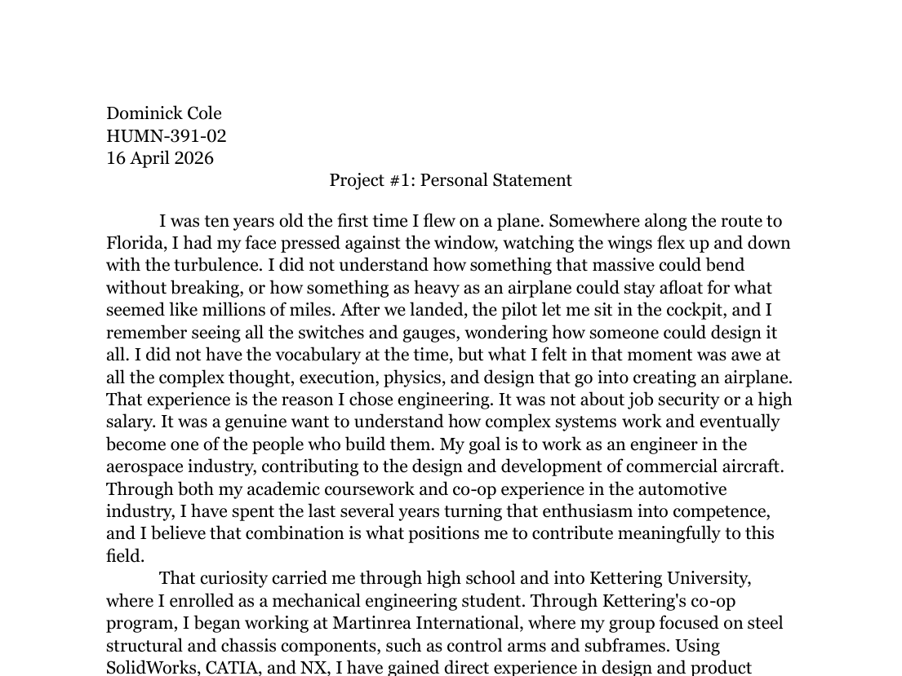
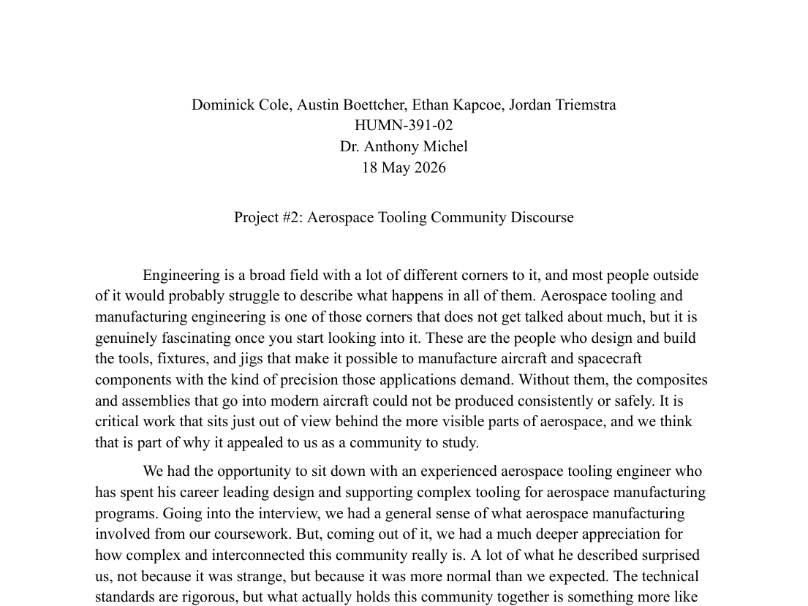
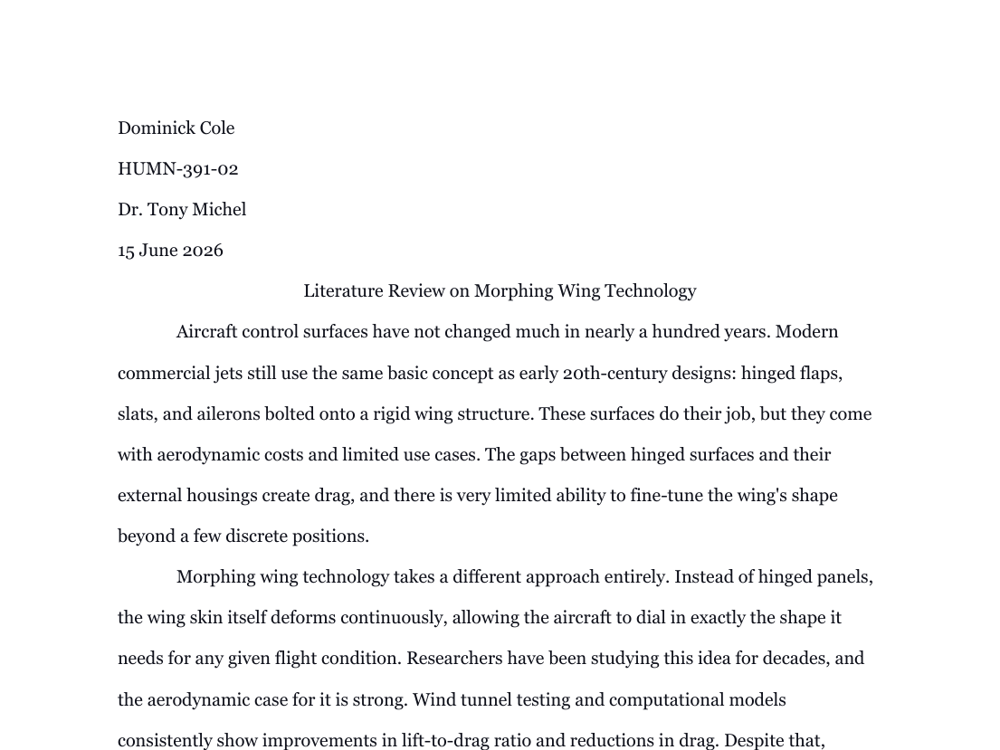

Writing for every audience.
A collection of work that changes voice to fit the reader. It moves from a personal narrative, to a study of how a professional community communicates, to a formal research synthesis. Same author, three different genres, each one chosen for its audience.
About this portfolio
I'm a mechanical engineering student at Kettering University, and I'm headed toward aerospace structural design. Along the way I've learned that engineering is only half technical. The other half is being understood. A machinist, a hiring manager, a review committee, and a reader who has never opened a textbook on the subject all need a different version of the same idea.
This portfolio is built to show one thing: that I can move between genres on purpose, not by accident. The three pieces here were written for very different reasons and very different readers. Each one asked me to change my voice, my structure, and my evidence to match. Read together, they show range. They show that I can pick a form that serves the reader instead of forcing every idea through the same template.
Each linked page introduces a piece, explains what genre it represents, and points to what that example is meant to show. The personal narrative leans on honesty and a clear arc. The discourse community profile turns interviews and observation into a portrait of a working culture. The literature review sets voice aside almost entirely in favor of synthesis and citation. The shift between them is the whole point.
Intended audience: employers and engineering teams who weigh written communication alongside technical skill.
The writing
Three genres, three audiences. Open any piece to read the full document.

Personal Statement
A first-person story about how a childhood flight turned into a career direction. It is voice-driven and built around a single turning point.
Read piece →
Discourse Community Profile
An interview-based study of how aerospace tooling engineers communicate. It turns observation and quotation into a portrait of a culture.
Read piece →
Literature Review
A synthesis of six peer-reviewed sources on morphing-wing technology. It is formal, cited, and organized by theme rather than by voice.
Read piece →